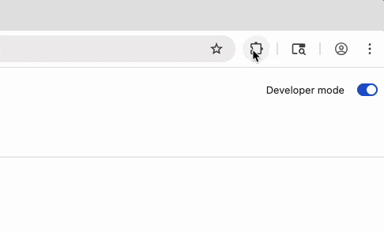
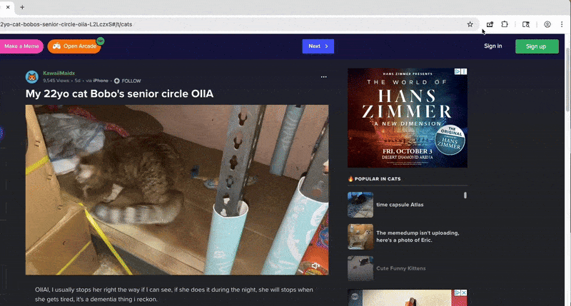

📌 Step 1: Pin the Extension
After installing the extension, click the puzzle icon (🧩) near the top-right corner of your browser toolbar (in Chrome or any Chromium-based browser). Then click the pin icon next to “Draggable Video Resizer” to keep it visible at all times.
🎯 Step 2: Pick a Video
Click the extension icon and press “Pick a video from this website”. Then click on any video on the page to make it resizable and draggable.
🛠️ Step 3: Drag & Resize
Use the top bar to drag the video and the bottom-right corner to resize it freely. You can also use the built-in controls below the video.